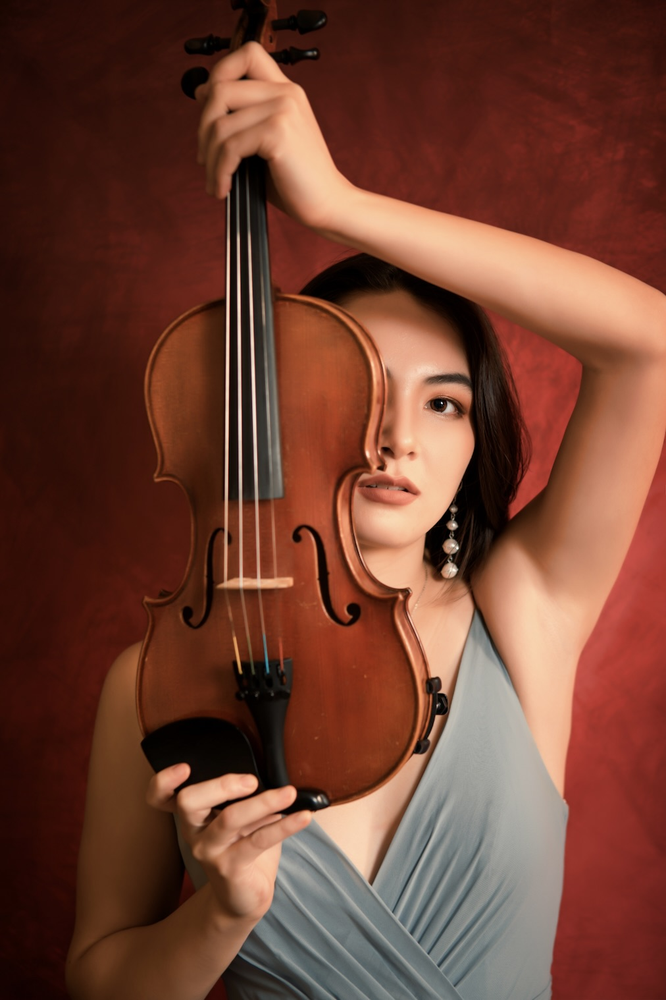

Cassandra May holds a BFA in Violin Performance from Carnegie Mellon University, where she studied under Professor William van der Sloot. A Bay Area native, she began learning the violin at age 3 and studied with teachers Patricia Burnham and David Chernyavsky.
Cassandra has performed extensively as a soloist, chamber musician, and orchestral violinist. Her recent accomplishments include winning the Pittsburgh Concert Society Major Award with the Mezza String Quartet and placing runner-up in Carnegie Mellon's 2025 Concerto Competition. She was also a recipient of the Pittsburgh Female College Association Award and has been recognized as a prizewinner in the ENKOR, Peninsula Young Musicians, KAMSA, United States Open Music, and Junior Bach Festival competitions. Her past orchestral leadership roles include concertmaster and associate principal positions with the Golden State Youth Orchestra and San Francisco Youth Orchestra, and Carnegie Mellon Philharmonic.
Her musical studies have taken her to the Mozarteum Academy in Salzburg, where she studied with Igor Petrushevski, as well as the Tanglewood String Quartet Workshop, Bowdoin International Music Festival, and other summer programs. She has participated in masterclasses with artists including Callum Smart, Nikki Chooi, Mark Kaplan, David Kim, and the Daedalus Quartet.
Cassandra is also an experienced violin teacher, working with students ages 8–20 on solo and orchestral repertoire, chamber music, technique, and orchestra auditions. She is passionate about helping young musicians build both confidence and a strong musical foundation.